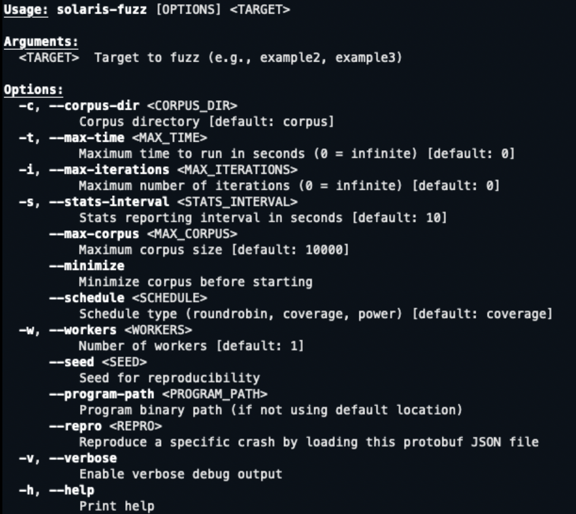
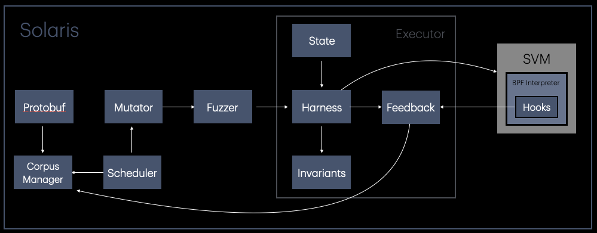
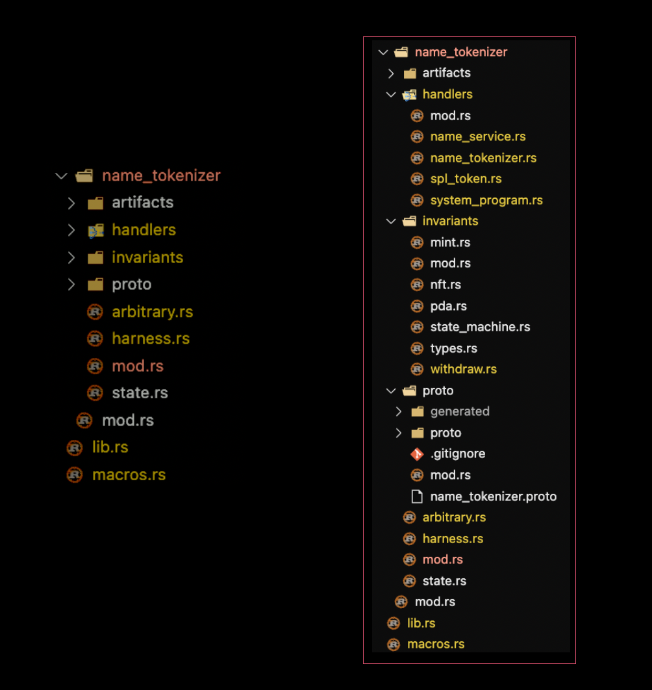
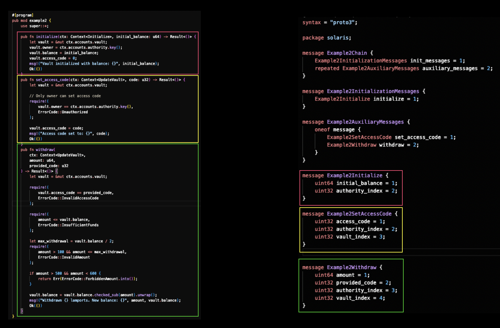
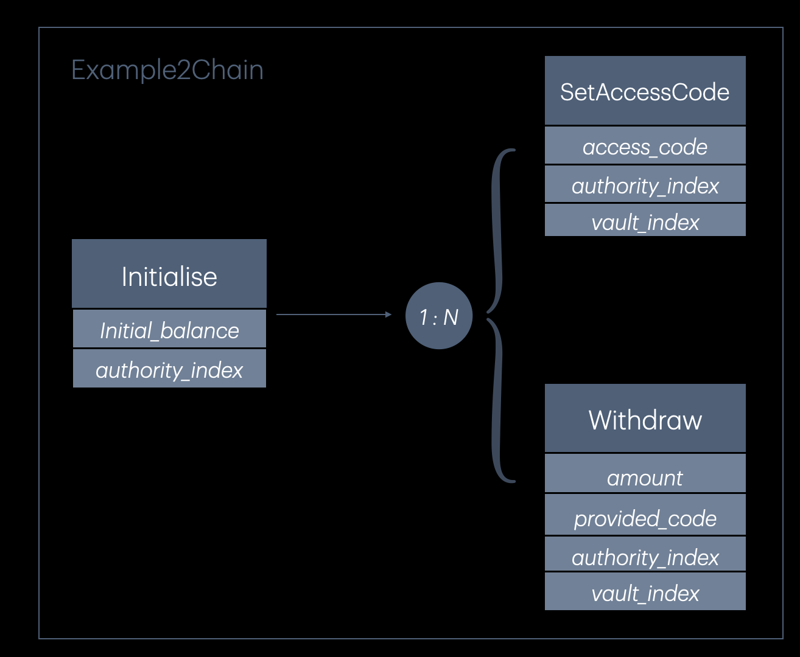
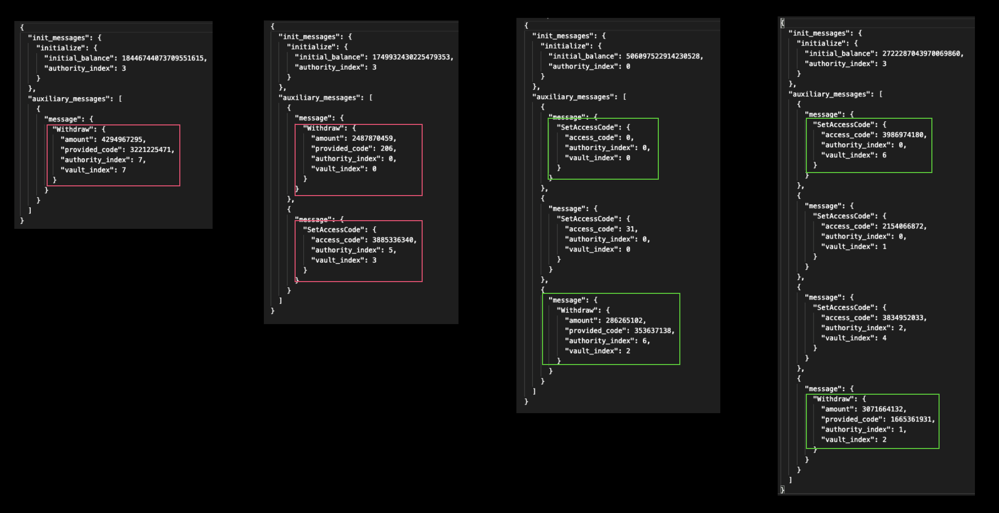
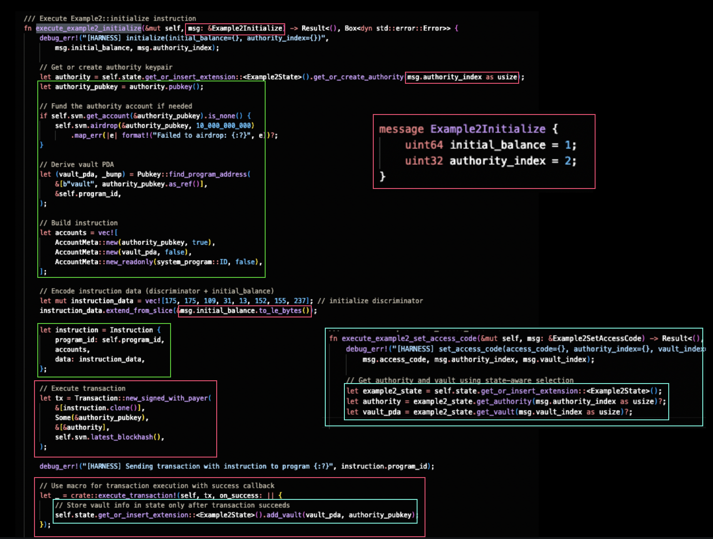
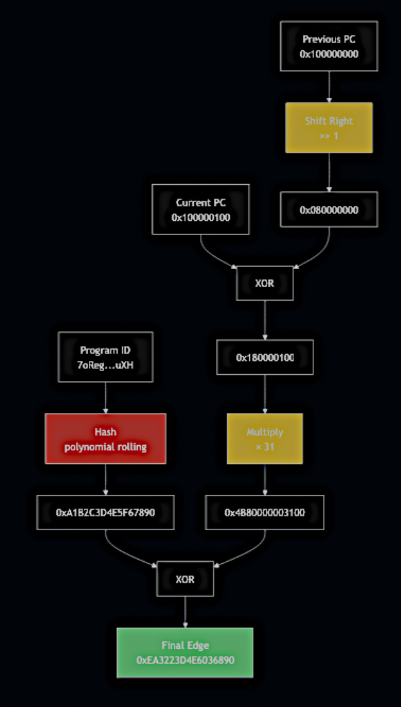
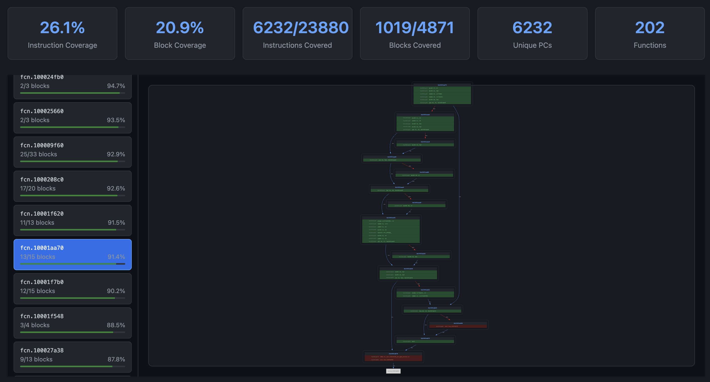

This article introduces Solaris, a stateful, structure-aware, sBPF bytecode coverage-guided fuzzer designed for Solana programs.
By tracking execution state across transaction sequences, understanding program structure, and using bytecode-level coverage feedback, Solaris systematically explores a target program state space.
Introduction
Solaris is a stateful, structure-aware, sBPF bytecode coverage-guided fuzzer for Solana programs. It maintains execution context across transaction sequences and uses sBPF bytecode coverage feedback to systematically explore the program's state space. This enables discovery of vulnerabilities that require specific state conditions and instruction orderings.
Motivation
Solana programs follow a stateless architecture and don't maintain state between transactions. Each instruction operates on accounts passed to it, and any state changes must be explicitly saved to those accounts. However, to properly test these programs, we need to fuzz them in a stateful manner, executing sequences of instructions that build up program state over time.
The fundamental challenge is discovering the specific state conditions and instruction sequences required to reach deep program logic. A naive fuzzer faces three key obstacles:
- Structural Validity: Most random transactions fail basic validation (wrong account types, malformed instruction data)
- State Dependencies: Reaching interesting program states requires executing specific instruction sequences that establish particular conditions across multiple transactions
- Blind Exploration: Without coverage feedback at the bytecode level, the fuzzer cannot tell which inputs are exploring new execution paths
Solaris addresses these challenges through:
- Structure-Aware Mutation: Understanding transaction requirements, account relationships, and instruction formats to generate semantically valid inputs
- Stateful Execution: Maintaining program state across transaction sequences
- sBPF Bytecode Coverage Tracking: Instrumenting the Solana Virtual Machine to track executed instructions and branches at the bytecode level
- Coverage-Guided Exploration: Using bytecode coverage feedback to prioritize test cases that discover new execution paths
This approach enables Solaris to efficiently fuzz Solana programs by combining valid input generation with stateful execution and relevant coverage feedback, rather than wasting cycles on malformed transactions or redundant execution paths.
CLI and Key Features
Solaris provides a command-line interface for configuring and running fuzzing campaigns:

Key features include:
- Corpus Management: Solaris maintains a corpus of interesting test cases that trigger new coverage or exhibit unique behavior. The corpus automatically grows as the fuzzer discovers inputs that reach new code paths. The corpus manager is also in charge to minimize the corpora in intervals along the fuzzing campaign.
- Scheduling Algorithms: Multiple scheduling strategies determine which test cases to mutate next:
- Coverage-based scheduling: Prioritizes test cases that reached recent coverage gains
- Power scheduling: Assigns energy to test cases based on their potential to discover new paths
- Multi-Worker Support: Solaris can spawn multiple fuzzing workers that share a corpus and coverage map, enabling parallel exploration of the state space. Workers coordinate to avoid redundant work while maximizing throughput.
- Test Case Reproducibility: Every crash or invariant violation includes the sequence of instructions required to reproduce it. Test cases are serialized in a JSON format, making it straightforward to replay failures during debugging or integrate findings into regression test suites.
Architecture
The Solaris architecture orchestrates multiple components to generate, mutate, execute, and evaluate test cases:

Test Case Representation
Test cases are defined using Google Protocol Buffers (protobuf), a language-neutral, platform-neutral serialization format developed by Google. Unlike treating inputs as raw byte arrays, protobuf provides a structured, schema-driven representation where data is organized into typed fields (integers, strings, nested messages) defined in .proto files. This structured format offers two key advantages for fuzzing:
- Type Safety: Each field has a defined type and semantic meaning (e.g., a
u64representing a lamport amount, abytesfield for some data parameter, ... etc), preventing nonsensical mutations like treating some data field as an integer - Structure-Aware Mutation: The fuzzer can navigate the message hierarchy to mutate specific fields intelligently rather than blindly flipping random bits
In Solaris, protobuf schemas capture the complete structure of Solana transaction sequences. This enables the mutator to generate semantically valid test cases that respect transaction requirements while still exploring the input space.
Corpus Manager
The Corpus Manager maintains the pool of interesting test cases discovered during fuzzing. It tracks which inputs reached new coverage, minimizes the corpus set in intervals, and provides test case selection for the scheduler.
Scheduler
The Scheduler intelligently selects test cases from the corpus for mutation. Different strategies include:
- Coverage-based: Favors recently-discovered test cases that expanded coverage
- Power-based: Assigns mutation energy based on augmented statistics gathered on runtime, such as program input accesses, testcase length, and other statistics that can be assessed in conjunction for exploration potential
Mutator
The Mutator component applies transformations to selected test cases. It operates at two levels:
- Generic Mutations: Standard fuzzing operations (bit flips, arithmetic mutations, message field swapping/insertion/deletion) applied to protobuf fields.
- Custom Mutations: Domain-specific generation logic that leverages constraints defined via
Arbitrarytrait implementations in target-specificarbitrary.rsfiles. These mutations understand Solana semantics. e.g., generating valid account types, producing realistic instruction parameter ranges within expected bounds, ... etc.
This dual approach enables both broad exploration through generic mutations and semantically-guided generation through custom logic. The mutator tracks which strategies successfully discover new coverage and adaptively weights future mutation selection accordingly.
Fuzzer Orchestrator
The Fuzzer Orchestrator coordinates the main fuzzing loop. Delegates corpus entry selection to the Scheduler, applying mutations to the Mutator, executing test cases through Executors, and processing feedback through the Feedback Manager. In multi-worker mode, multiple fuzzer instances run in parallel, each with its own Executor, while sharing coverage information through a shared memory map to coordinate their exploration efforts.
Executor and Harness
The Executor manages the harness lifecycle and orchestrates test case execution. For each test case, the following takes place:
- Reset the harness to a clean initial state
- Clear coverage feedback from the previous execution
- Execute the mutated protobuf message through the harness
- Collect coverage feedback and timing information from instrumentation hooks in the SVM
The Harness is the program-specific component that translates protobuf messages into actual Solana transactions. In addition, it manages program state, and checks security invariants to detect violations.
Harnesses can define custom invariants specific to the instruction being executed, and program being tested (e.g., "total token supply should never exceed cap" or "only authorized accounts can withdraw").
Instrumented sBPF VM
Test cases execute in an instrumented sBPF virtual machine that tracks execution at the bytecode level. Solaris uses a modified version of solana-sbpf where the interpreter calls instrumentation hooks on every instruction execution. These hooks capture:
- Edge coverage: Control flow transitions between basic blocks
- PC tracking: Individual bytecode instruction addresses that have been executed
- Per-program coverage: Separate edge tracking for each program involved in execution, including CPI calls
- Features: Generates synthetic coverage edges on a variety of operations on successful transaction chains to augment coverage feedback
This bytecode-level feedback enables the fuzzer to distinguish between test cases that exercise different code paths versus those that follow the same execution trace.
Feedback Manager
The Feedback Manager receives execution results from the instrumented VM and evaluates how "interesting" each test case was.
When new edges are found, the test case is added to the corpus along with its coverage and assigned an energy score based on the number of new edges, execution success and other metrics.
The feedback manager also tracks mutation effectiveness. Essentially which strategies successfully discover new coverage, allowing the mutator to adaptively weight future mutation selection.
Modeling Decision Trees with Protocol Buffers
A key challenge in fuzzing stateful programs is modeling the decision tree of possible instruction sequences in a way that's structured enough to generate valid inputs, yet flexible enough to let the fuzzer discover the correct ordering organically through coverage feedback. Solaris solves this using Protocol Buffers' hierarchical message structure.
Solaris Target Directory Structure
The diagram below shows a typical solaris working filesystem:

A Solaris fuzz target implementation usually contains the following:
- artifacts/: Compiled program binaries for testing
- handlers/: Instruction execution functions that translate protobuf messages into Solana transactions.
- invariants/: Security property checkers that validate state integrity (e.g.,
mint.rsverifies token supply invariants,state_machine.rschecks state transition validity,withdraw.rsvalidates balance constraints) - proto/: Protobuf schema definitions (
.protofiles) and generated Rust code - arbitrary.rs: Custom
Arbitrarytrait implementations for domain-specific mutations - harness.rs: Main fuzzing harness that orchestrates execution and delegates to handlers
- state.rs: Persistent state tracking across transactions (e.g., created accounts, keypairs, PDAs, ... etc)
Each handler builds the appropriate instruction accounts, encodes instruction data, constructs signed transactions, and executes them on the SVM.
Handlers include both target program instructions and external program instructions (e.g., SPL Token operations).
This separation is critical for discovering vulnerabilities that arise when external programs modify state that the target program assumes it controls exclusively. These scenarios can be easily integrated into Solaris.
This modular structure separates concerns. The protobuf schema to defines the input space, handlers execute instructions, invariants check correctness, and the harness acts as the main coordinator.
Example: Vault Program with Access Control
To illustrate how Solaris models stateful programs, consider a simple Solana vault program with three instructions that must be executed in a specific sequence to achieve its correct operation:
#[program]
pub mod example2 {
pub fn initialize(ctx: Context<Initialize>, initial_balance: u64) -> Result<()> {
let vault = &mut ctx.accounts.vault;
vault.owner = ctx.accounts.authority.key();
vault.balance = initial_balance;
vault.access_code = 0;
Ok(())
}
pub fn set_access_code(ctx: Context<UpdateVault>, code: u32) -> Result<()> {
let vault = &mut ctx.accounts.vault;
require!(
vault.owner == ctx.accounts.authority.key(),
ErrorCode::Unauthorized
);
vault.access_code = code;
Ok(())
}
pub fn withdraw(ctx: Context<UpdateVault>, amount: u64, provided_code: u32) -> Result<()> {
let vault = &mut ctx.accounts.vault;
require!(vault.access_code == provided_code, ErrorCode::InvalidAccessCode);
require!(amount <= vault.balance, ErrorCode::InsufficientFunds);
let max_withdrawal = vault.balance / 2;
require!(amount > 100 && amount <= max_withdrawal, ErrorCode::InvalidAmount);
if amount > 500 && amount < 600 {
return Err(ErrorCode::ForbiddenAmount.into());
}
vault.balance = vault.balance.checked_sub(amount).unwrap();
Ok(())
}
}
#[derive(Accounts)]
pub struct Initialize<'info> {
#[account(mut)]
pub authority: Signer<'info>,
#[account(
init,
payer = authority,
space = 8 + 32 + 8 + 4,
seeds = [b"vault", authority.key().as_ref()],
bump
)]
pub vault: Account<'info, Vault>,
pub system_program: Program<'info, System>,
}
#[derive(Accounts)]
pub struct UpdateVault<'info> {
#[account(mut)]
pub authority: Signer<'info>,
#[account(
mut,
seeds = [b"vault", authority.key().as_ref()],
bump
)]
pub vault: Account<'info, Vault>,
}
#[account]
pub struct Vault {
pub owner: Pubkey,
pub balance: u64,
pub access_code: u32,
}The diagram below shows the three program instructions on the left, alongside their corresponding protobuf message definitions on the right:

State Dependencies:
The program exhibits state dependencies that makes fuzzing non trivial:
- initialize: Creates a vault with an owner and initial balance, sets
access_codeto 0 - set_access_code: Sets a numeric access code
- only owner can call, requires vault to exist
- withdraw: Withdraws funds
- requires correct access code, sufficient balance, and satisfies amount constraints:
amount > 100,amount <= balance/2, and not in forbidden range [500, 600]
A naive fuzzer would struggle due to the following reasons:
- Instruction ordering matters (must initialize before set_access_code before withdraw)
- Parameter relationships are non-obvious (access codes must match, amount constraints are interdependent)
Protobuf Schema Modelling
To fuzz this program, we define a protobuf schema that captures the instruction sequence structure. The schema is organized into three hierarchical levels:
Level 1: Top-Level Instruction Chain Structure
message Example2Chain {
Example2InitializationMessages init_messages = 1;
repeated Example2AuxiliaryMessages auxiliary_messages = 2;
}This top-level message represents a complete test case. It enforces that every execution begins with initialization, followed by a variable-length sequence of auxiliary operations. We can define this hierarchy at our convenience on a case-by-case basis depending the target program being fuzzed.
Level 2: Initialization and Auxiliary Message Wrappers
Initialization phase (always executes first):
message Example2InitializationMessages {
Example2Initialize initialize = 1;
}This ensures initialization happens exactly once at the start of each test case.
Auxiliary phase (fuzzer-controlled sequence):
message Example2AuxiliaryMessages {
oneof message {
Example2SetAccessCode set_access_code = 1;
Example2Withdraw withdraw = 2;
}
}The oneof keyword creates a choice point: each auxiliary message can be either SetAccessCode or Withdraw. The repeated modifier in the chain structure allows any number of these choices, enabling the fuzzer to generate sequences like [SetAccessCode, Withdraw, SetAccessCode, Withdraw, ...].
Level 3: Concrete Instruction Messages
Initialize instruction:
message Example2Initialize {
uint64 initial_balance = 1;
uint32 authority_index = 2;
}SetAccessCode instruction:
message Example2SetAccessCode {
uint32 access_code = 1;
uint32 authority_index = 2;
uint32 vault_index = 3;
}Withdraw instruction:
message Example2Withdraw {
uint64 amount = 1;
uint32 provided_code = 2;
uint32 authority_index = 3;
uint32 vault_index = 4;
}Each instruction message contains typed fields that map directly to the Rust function parameters, providing structure-aware mutation targets for the fuzzer.
Design Properties
This three-level hierarchy provides critical properties for effective fuzzing:
- Required Initialization:
init_messagesalways executes first, ensuring the vault exists before any operations - Flexible Auxiliary Sequence:
repeated auxiliary_messagesallows any number ofset_access_codeandwithdrawinstructions in any order - Type-Safe Parameters: Each message defines typed fields (e.g.,
uint64 initial_balance,uint32 access_code) that prevent nonsensical mutations
Is important to note that, this schema is not meant to hardcode the "correct" sequence of instructions. It only ensures structural validity. The fuzzer must still discover through coverage feedback that:
- Setting an access code enables more withdraw code paths
- Certain amount values trigger different branches
Visualizing the Decision Tree
The protobuf schema implicitly defines a decision tree of possible instruction sequences. The diagram below shows how the schema creates a branching structure, with the initialize instruction always executing first, followed by a variable-length sequence of auxiliary messages:

The tree structure its as follows:
- Initialize (always executes first, 2 parameters: initial_balance, authority_index)
- 1:N Auxiliary Messages (variable count and ordering determined by fuzzer)
- SetAccessCode (3 parameters: access_code, authority_index, vault_index)
- Withdraw (4 parameters: amount, provided_code, authority_index, vault_index)
The oneof construct creates branches at each step in the auxiliary sequence, allowing the fuzzer to choose which instruction type to execute. The repeated keyword permits unlimited repetitions, enabling the fuzzer to discover that multiple auxiliary messages are necessary to reach deeper program states.
This design is permissive enough to allow invalid sequences, yet structured enough to ensure all generated sequences are syntactically valid Solana transactions. The fuzzer learns valid instruction orderings through coverage feedback rather than hardcoded rules.
Test Case Evolution
As fuzzing progresses, the corpus evolves organically to discover deeper program states. The diagram below shows four actual test cases from different stages of fuzzing, illustrating how the fuzzer learns to build more complex instruction sequences over time:

Reading from left to right, each panel shows a JSON-serialized protobuf test case at a different stage of the fuzzing campaign. The red-boxed messages in early panels and green-boxed messages in later panels highlight the key mutations that drove coverage gains.
- Panel 1 - Early Stage: The corpus starts simple with only a
Withdrawmessage in the auxiliary array, achieving minimal coverage. - Panel 2 - Growing Complexity: The mutator inserts a second auxiliary message. The corpus now contains both
WithdrawandSetAccessCode, but in the wrong order. The withdraw still fails, but the presence ofSetAccessCodeincreases coverage by exploring the set_access_code instruction path. - Panel 3 - Discovering Ordering: The fuzzer discovers the correct sequence:
SetAccessCodefollowed byWithdraw. Notice both messages are now green-boxed. The correct ordering unlocks new branches in the withdraw function where it checks balance and amount constraints. - Panel 4 - Richer Test Cases: As fuzzing continues, the corpus evolves toward more complex test cases that conform to the correct instruction ordering. Multiple
SetAccessCodeandWithdrawmessages now appear in proper sequence, demonstrating that the fuzzer has learned to consistently generate valid instruction chains that maximize coverage.
Notice how the fuzzer progresses from Panel 2 (wrong order) to Panel 3 (correct sequence). This evolution is only possible because the harness implements intelligent state tracking for the access code constraint.
While the Withdraw protobuf message includes a provided_code field, the harness doesn't actually use it. Instead, when executing a withdraw instruction, it retrieves the access code that was previously set via SetAccessCode:
let access_code = if let Some(stored_code) = example2_state.vault_access_codes.get(&vault_pda.to_string()) {
*stored_code as u32 // Use the actual code from state
} else {
msg.provided_code // Fall back to protobuf field if no code was set
};This means once the fuzzer discovers the SetAccessCode → Withdraw sequence (Panel 3), subsequent mutations automatically use the correct access code from state. Without this, the fuzzer would waste cycles randomly mutating provided_code trying to guess the right value, never reaching the deeper withdraw logic.
The provided_code field is technically unnecessary. It's only included in this example to demonstrate how Solaris handles stateful constraints. In practice, you'd typically omit such fields and rely on state tracking for the most part. Further state tracking will be showcased in the Harness section below.
In conclusion, the testcase evolution demonstrates how coverage-guided feedback drives automatic discovery of:
- Sequence length: More messages enable reaching deeper program states
- Instruction ordering: Correct sequencing unlocks dependent code paths
- Constraint boundaries: Specific ranges trigger different branches
- State dependencies: The harness bridges protobuf fields with runtime state to enable semantic fuzzing
This entire progression happens without manually specifying instruction orderings or parameter constraints. The fuzzer learns at runtime through bytecode coverage feedback and intelligent harness design.
The Harness
The harness bridges protobuf messages and Solana transactions, translating test cases into program transactions. This translation layer demonstrates how protobuf field mutations create cascading effects through account derivation and state management.

The diagram above shows the initialize instruction harness (highlighted in green boxes on the left) alongside the protobuf message definition (red box, top right). Two protobuf fields drive the entire execution:
Protobuf Field Ingestion
1. authority_index field:
The harness retrieves an authority keypair from a state-managed pool using the protobuf field as an index:
let authority = self.state.get_or_insert_extension::<Example2State>()
.get_or_create_authority(msg.authority_index as usize);
let authority_pubkey = authority.pubkey();This single field mutation causes a domino effect:
- Different
authority_indexderives different authority keypair - Different authority derives different derived PDA (vault address)
- Different vault PDA derives different account storage location
The vault PDA is derived deterministically based on authority_pubkey:
let (vault_pda, _bump) = Pubkey::find_program_address(
&[b"vault", authority_pubkey.as_ref()],
&self.program_id,
);By mutating just authority_index, the fuzzer explores different account states, producing scenarios relevant to account ownership, PDA collisions, and cross-account interactions.
2. initial_balance field:
The balance is encoded directly into the instruction data:
let mut instruction_data = vec![175, 175, 100, 31, 13, 152, 155, 237]; // discriminator
instruction_data.extend_from_slice(&msg.initial_balance.to_le_bytes());Mutating initial_balance explores different value ranges, triggering constraints in subsequent withdraw instructions.
Stateful Execution: Preserving Context Across Instructions
After successful transaction execution, the harness saves the vault-authority pair to internal state (highlighted in cyan box at bottom):
// Store vault info in state only after transaction succeeds
self.state.get_or_insert_extension::<Example2State>()
.add_vault(vault_pda, authority_pubkey);This state persistence enables subsequent instructions to reference the same vault. As an example, the set_access_code harness (shown in cyan box, bottom right) retrieves the vault from internal state using the protobuf vault_index:
let example2_state = self.state.get_or_insert_extension::<Example2State>();
let authority = example2_state.get_authority(msg.authority_index as usize)?;
let vault_pda = example2_state.get_vault(msg.vault_index as usize)?;This state-aware selection ensures the fuzzer can:
- Build valid instruction chains referencing the same vault
- Explore multi-vault scenarios by varying
vault_index - Test authority mismatches by using different
authority_indexvalues
This harness architecture showcases how protobuf's structured representation enables intelligent exploration. Field mutations propagate through account derivation, instruction encoding, and cross-instruction state references, allowing the fuzzer to systematically explore the program's state space.
Program-Scoped sBPF Edge Tracking
Coverage feedback is fundamental to effective fuzzing. By tracking which code paths have been executed, the fuzzer can identify test cases that explore new program behavior and prioritize them for further mutation. However, obtaining accurate coverage in Solana's execution environment presents unique challenges because while each program executes in an isolated VM instance with its own host memory mappings, the SVM uses a fixed virtual address layout for all programs.
The Collision Problem in sBPF Coverage
The SVM maps sBPF programs to the same base address:
- sBPF v0-v2: Programs are mapped at
0x100000000 - sBPF v3+: Programs are linked on compile-time and use zero-based addressing, mapped at
0x0
This creates a fundamental problem for traditional edge coverage tracking. Edge coverage uses program counter (PC) values to identify control flow transitions. The standard edge calculation is:
edge = (previous_pc >> 1) ^ current_pcWhen multiple programs share the same virtual address layout, identical control flow transitions (same previous_pc and current_pc values) in different programs produce the same edge ID, even though they represent completely different code executing in different programs.
For example, a transition from 0x100000080 → 0x100000100 in the target program has the same edge ID as the identical transition in a dependency program, despite executing entirely different instructions at those addresses. This causes edge coverage pollution where the fuzzer cannot distinguish which program generated which coverage, leading to:
- False coverage attribution
- Missed coverage gaps
- Ineffective corpus prioritization
Program-Scoped Edge Tracking
Solaris addresses this with a custom hash implementation that incorporates program IDs into edge calculation, mitigating collisions across different programs. The following diagram illustrates this:

The algorithm operates in two parallel paths that are combined at the end:
Left Path (Edge Calculation):
- Take the previous PC value (
0x100000000) - Shift right by 1 bit, producing
0x080000000 - XOR with current PC (
0x100000100) - Result: base edge ID
0x180000100
Right Path (Program ID Aggregation):
- Take the full program ID (Base58 encoded public key, e.g.,
7oRegZsrEfNzmiUY0s43tHjFkkhb236YfZb1UZrCMuXH) - Apply polynomial rolling hash to compress the 32-byte program ID into a 64-bit value
- Result: program hash
0xA1B2C3D4E5F67890
Combination:
- Multiply the base edge by a large prime (
× 31) - XOR with the program hash
- Result: program-scoped edge ID
0xEA3223D4E6036890
This approach scopes edge IDs to their originating program by incorporating the program ID into the hash. When two programs have identical control flow at the same virtual addresses, the program hash ensures their edges map to different IDs. While collisions remain theoretically possible, particularly with many programs executing simultaneously, we haven't observed significant edge pollution in practice across typical Solana programs and their dependencies during fuzzing campaigns following this approach.
Cross-CPI Coverage Tracking
Solana programs frequently invoke other programs through Cross-Program Invocation (CPI). When the target program calls a dependency, both programs generate coverage. Solaris maintains per-program coverage tracking alongside global coverage, enabling the fuzzer to identify new edges while also providing detailed per-program statistics in coverage reports.
The coverage report interface provides detailed per-program statistics and CFG inspection for coverage visualization:

Solaris coverage report displays:
Fuzzing Statistics:
- Total Executions: Number of test cases executed
- Corpus Entries: Test cases saved for mutation
- Total Edges: Unique edges discovered across all programs
- Crashes Found: Bugs discovered
- Runtime: Elapsed fuzzing time
- Programs Tracked: Number of distinct programs with coverage
Programs Coverage Summary:
Each row represents a different program (identified by its Base58 program ID):
- Total PCs: Number of distinct program counter values in the program's bytecode
- Instruction Coverage: Percentage of instructions executed
- Block Coverage: Percentage of basic blocks executed
Detailed CFG Inspection:
Beyond aggregate statistics, Solaris provides detailed Control Flow Graph (CFG) visualization for all functions across all engaged programs.
Each basic block in the CFG is color-coded based on execution status: executed blocks are highlighted in green to show covered code paths while unexecuted blocks are highlighted in red, providing immediate visual feedback on which branches have been explored.
This per-function CFG visualization enables developers to precisely identify coverage gaps at the basic block level or IL level, making it straightforward to see exactly which branches, error handlers, or edge cases have not been reached by the current corpus.
This granular visibility enables developers to:
- Understand how test cases exercise both the target and its dependencies
- Track coverage growth separately for each program in the dependency graph
- Inspect color-coded CFGs to pinpoint exactly which basic blocks in which functions remain unexplored
Real-Time Coverage Visualization
Solaris provides both a TUI (Terminal User Interface) and Web UI dashboard for monitoring fuzzing campaigns in real time.
The interface displays live coverage metrics, execution statistics, and allows inspection of assembly and intermediate representation (IL) views, much like the static coverage reports covered earlier.
This enables developers to observe which basic blocks and instructions are being reached as the fuzzer explores the program.

Real-time TUI and Web UI dashboard showing live coverage tracking, execution statistics, and bytecode inspection
As with coverage reports, this visualization helps identify coverage plateaus and guides decisions about when to adjust fuzzing strategies or introduce manual guidance through hybrid fuzzing techniques.
Hybrid Fuzzing with Radiant
While coverage-guided fuzzing effectively explores reachable code paths, some program states require specific constraints that random mutation struggles to satisfy.
Solaris is planned for open-source release and will integrate with Radiant, our concolic execution engine for Solana programs.
This hybrid approach combines:
- Coverage-guided fuzzing to rapidly explore broad program behavior
- Concolic execution to solve constraints and reach code paths blocked by complex checks in an agile manner
- Manual guidance to direct Solaris toward specific unexplored blocks
The idea is that when Solaris encounters a coverage plateau, developers can use Radiant to symbolically analyze the path constraints preventing progress, generate concrete inputs that satisfy those constraints, and aggregate them into Solaris's corpus.
Conclusion
Solaris addresses the core challenges of stateful fuzzing Solana programs through structure-aware test case generation using Protocol Buffers, stateful execution tracking across transaction sequences, and collision-resistant bytecode coverage feedback that accurately attributes edges across CPI boundaries.
The Protocol Buffer-based approach allows Solaris to generate syntactically valid transactions while still exploring the full input space.
The collision-resistant hash algorithm solves the edge attribution problem caused by SVM's memory model.
Together, these techniques enable systematic exploration of program state space without hardcoding specific instruction sequences or constraints.
Solaris is planned for open-source release and will integrate with Radiant for manually-guided hybrid fuzzing to handle constraint-heavy code paths that pure fuzzing struggles to reach.